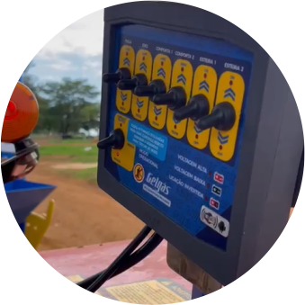

Equipamento nacional com
conceito e padrão europeu:
-
More
EIXO TUBULAR INTEIRIÇO PARA RODADO.
Close -
More
ESCADA, PLATAFORMA ELEVADA E VISOR DE CARGA;
Close -
More

SISTEMA JOYSTICK PARA REALIZAR TODAS AS FUNÇÕES DE DENTRO DA CABINE DO TRATOR.
Close -
More
ROSCA VERTICAL COM EXCLUSIVO SISTEMA INÍCIO DE ROSCA DUPLA.
Close -
More
ARCO SUPERIOR DE CONTENÇÃO ANTI TRANSBORNO.
Close -
More
SISTEMA DE CARREGAMENTO DE ALTA EFICIÊNCIA E RAPIDEZ.
Close -
More
PNEUS DE ALTA FLUTUAÇÃO.
Close -
More
EXCLUSIVA CUBA, FABRICADA INTEIRAMENTE EM AÇO INOX.
Close
Robustez e desempenho
que você pode confiar!
Fechar